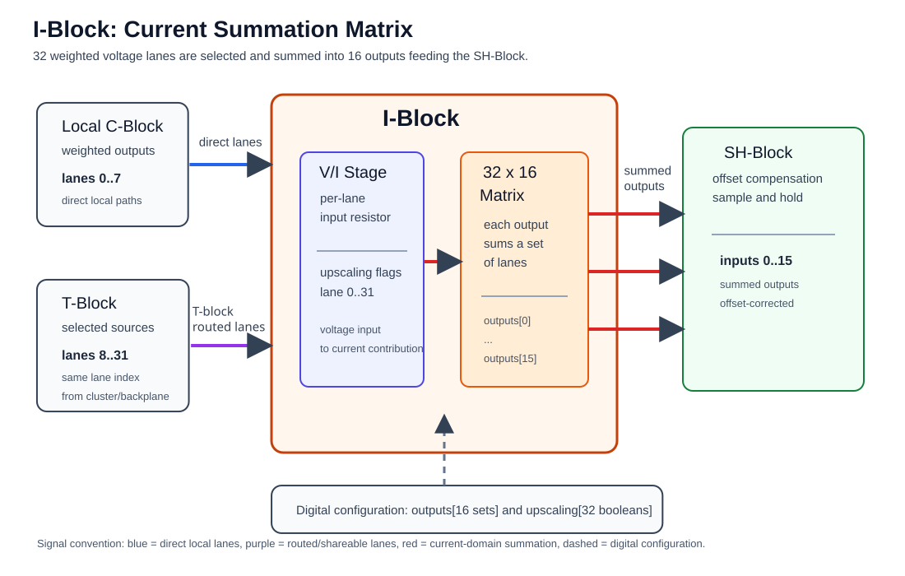

I-Block¶
The I-Block is the current summation block of a cluster. It receives the weighted analog lane voltages from the C-Block and routing fabric, converts selected voltage lanes into currents, and sums those currents into 16 output/input-path channels. In pybrid, these channels are addressed as logical M-Block input indices. On the mREDAC carrier layout, the I-Block's immediate right-side physical neighbor is the SH-Block, where offset compensation and sample-and-hold behavior take place.
Functionally, the I-Block is the final programmable summation stage before the logical M-Block input path. Physically, the diagram shows the SH-Block as the immediate right-side neighbor:
- The U-Block selects which source voltage appears on a lane.
- The C-Block applies the coefficient for that lane.
- The T-Block may replace shareable lanes
8..31with a lane from another cluster or the backplane. - The I-Block selects which lane currents are summed into each logical M-Block input node. In pybrid, these 16 output indices are addressed as M-Block input indices.
Hardware Role¶
The I-Block implements a 32 x 16 summation matrix:
- The 32 inputs are lane-aligned analog voltage signals.
- The 16 outputs are current-summing outputs for logical M-Block input indices
0..15. - Every output can receive zero, one, or multiple selected input lanes.
- Multiple selected lanes on the same output are summed electrically.
- An unused output is represented by an empty input set.
The I-Block is where weighted contributions are added. Summers are therefore not separate mathematical elements in the cluster. They are part of the input structure that feeds the logical M-Block input path.
Conceptually, every M-Block input receives:
where k is an output/input-path index in the range 0..15. pybrid exposes the same indices as M-Block input indices when programming routes.
Physical Placement¶
On the mREDAC carrier layout, the SH-Block is the block placed immediately to the right of the I-Block in the cluster region. The I-Block diagram therefore shows the physical right-side neighbor as the SH-Block rather than as an M-Block.
This physical placement detail does not change the pybrid programming model: cluster.iblock.outputs[0..15] and cluster.iblock.connect(..., m_input) still use the logical target input numbering associated with the M-Block inputs.
Voltage to Current Conversion¶
Signals arrive at the I-Block as lane voltages. The logical M-Block input path is current-coupled through virtual-ground summing nodes. The I-Block therefore converts each selected lane voltage into an input current before adding it to the selected logical input.
This conversion is implemented per lane by a selectable input range. The normal range is used for coefficients that fit directly into the C-Block coefficient interval. The upscaled range is used when a larger effective connection weight is required while keeping the stored C-Block coefficient inside its valid range.
In hardware, the upscaled range increases the lane's input current by a factor of about 10. Each lane has a fixed input resistor, and enabling upscaling switches a second resistor in parallel with it, which lowers the input resistance to roughly one tenth.
The relevant ranges are:
- Direct C-Block coefficient range:
-1.0..+1.0. - Same-cluster
cluster.route()effective coefficient range without I-Block upscaling:-1.0..+1.0. - Same-cluster
cluster.route()accepted effective coefficient range when using I-Block upscaling:1.0 < abs(c_factor) <= 8.0. - Invalid same-cluster
cluster.route()coefficient range: values withabs(c_factor) > 8.0, which raiseValueError.
In pybrid, the lane range selection is represented by cluster.iblock.upscaling[lane]:
Falseselects the normal lane input range.Trueselects the upscaled lane input range.- Upscaling is indexed by input lane
0..31; it is not indexed by I-Block output or M-Block input. - A lane configured for upscaling contributes through the upscaled range everywhere that lane is connected.
Higher-level routing helpers use this range switch when the requested connection weight is outside the direct C-Block range. For 1.0 < abs(c_factor) <= 8.0, cluster.route() stores c_factor / 8.0 in cluster.cblock.elements[u_out].factor and enables cluster.iblock.upscaling[u_out] for the same lane. For example, a requested factor of 4.0 is stored as 0.5 in the C-Block and applied through the upscaled I-Block lane range. A requested factor of 8.0 is stored as 1.0. If abs(c_factor) > 8.0, the reduced coefficient is still outside the normal C-Block range and cluster.route() raises ValueError before applying the U-, C-, or I-Block configuration.
Upscaled lanes need gain calibration
The software divides by 8, but the hardware upscaling factor is about 10. The effective weight becomes exactly 8× the stored coefficient only after gain calibration has run: the calibration measures each upscaled lane and applies a gain correction of about 0.8 on the C-Block. Before calibration, an upscaled lane runs about 25 % too high (10 / 8).
Gain calibration also requires a lane to be upscaled either on all of its destinations or on none. A lane that is upscaled on some destinations and not on others is rejected by the calibration.
Summation Matrix¶
Each of the 16 I-Block outputs stores a set of connected input lanes. This makes the I-Block a many-to-one summation matrix rather than a one-to-one selector.
For example, output 5 can be connected to lanes 2, 9, and 17. The voltage on each selected lane is converted into a current, and the three currents are summed into logical M-Block input 5.
pybrid treats an input lane as belonging to only one output by default. This is a safety policy to avoid unintentionally splitting one analog lane into multiple virtual-ground summing nodes. The hardware can be programmed more flexibly, and pybrid allows override with force=True when a lane is intentionally shared.
Relationship to C-Block and T-Block¶
The I-Block receives 32 lane positions, but the source of those positions depends on the lane range:
- Lanes
0..7are direct local lanes from the same cluster C-Block to the same cluster I-Block. - Lanes
8..31are shareable lanes selected through the T-Block routing fabric. - For lanes
8..31, the lane index stays bitwise aligned through routing. Destination lane17receives a selected source lane17signal. - The I-Block does not choose the source cluster. It only connects the resulting lane signal to one or more M-Block input summing nodes.
This means the I-Block is destination-focused. Source choice is handled by the U-Block and T-Block, coefficient choice is handled by the C-Block, and summing into the logical M-Block input path is handled by the I-Block.

Example Signal Flow¶
A typical single weighted contribution follows this path:
- An M-Block output produces an analog voltage.
- The U-Block places that voltage onto a selected lane.
- The C-Block applies the coefficient for the same lane.
- The I-Block connects that lane to one M-Block input.
- The lane voltage is converted into current and added at the target virtual-ground input.
A typical summed M-Block input follows this path:
- Several lanes are prepared by the U-Block and C-Block.
- The I-Block connects all required lanes to the same M-Block input index.
- Each selected lane contributes its own input current.
- The M-Block input receives the sum of all selected currents.
A typical routed contribution follows this path:
- A source cluster creates a weighted signal on one of the shareable lanes
8..31. - The T-Block routes the same lane index to the destination cluster.
- The destination I-Block receives that lane position.
- The destination I-Block connects the lane to the target M-Block input.
A typical upscaled contribution follows this path:
- A connection requests a weight larger than the normal coefficient range.
- pybrid reduces the stored C-Block coefficient to stay inside the coefficient range.
- pybrid enables I-Block upscaling for the same lane.
- The I-Block uses the upscaled conversion range when that lane contributes current to the target input.
Programming with pybrid¶
The I-Block is available on a cluster as cluster.iblock.
Reset the I-Block¶
reset() disconnects all 16 summing outputs and disables all lane upscaling switches.
Connect One Lane to an M-Block Input¶
input_lane is the I-Block input lane in the 0..31 range. output_input is the M-Block input index in the 0..15 range.
For example, this connects lane 12 to M-Block input 5:
Sum Multiple Lanes Into One Input¶
The final positional argument is always the output index, which is the target M-Block input. All preceding positional arguments are input lanes.
For example, this sums lanes 2, 9, and 17 into M-Block input 5:
Calling connect() again for the same output unions the new input lanes into that output set, subject to the same duplicate-lane protection.
Allow Intentional Lane Sharing¶
By default, pybrid raises an error if one of the selected input lanes is already connected to a different output. Use force=True only when intentionally allowing one lane to feed multiple outputs:
force=True bypasses the duplicate-lane protection. It does not remove the lane from any output where it was already connected.
Configure Lane Upscaling¶
For example, this enables the upscaled conversion range for lane 12:
Higher-level helpers normally configure this automatically when needed. Direct use is mainly useful when manually programming the U-Block, C-Block, and I-Block together.
Program a Complete Cluster Route¶
For same-cluster routes, the convenience helper configures U-Block, C-Block, and I-Block together:
This performs the following steps:
cluster.ublock.connect(m_out, u_out)selects the source for the lane.cluster.cblock.elements[u_out].factor = c_factorassigns the coefficient to the lane.cluster.iblock.connect(u_out, m_in)connects the weighted lane to the target M-Block input.
If abs(c_factor) is greater than 1.0, cluster.route() divides the stored coefficient by 8.0 and enables cluster.iblock.upscaling[u_out] for that lane. Values with 1.0 < abs(c_factor) <= 8.0 can be handled this way. If the reduced coefficient is still outside the normal range, pybrid raises an error. Because the hardware upscaling factor is about 10, the requested weight is only met after gain calibration (see the warning above).
For example:
This routes source 3 to lane 12, applies coefficient -0.5, and sums the resulting current into M-Block input 7.
Configuration Model¶
In pybrid, the I-Block configuration is represented by two fields:
outputs: a list with 16 entries. Each entry is a set of input lane indices connected to that M-Block input.upscaling: a list with 32 boolean entries. Each entry controls the conversion scale for one input lane.
This mirrors the hardware behavior: every M-Block input can sum any subset of the 32 available lanes, and every lane has its own conversion-scale switch.